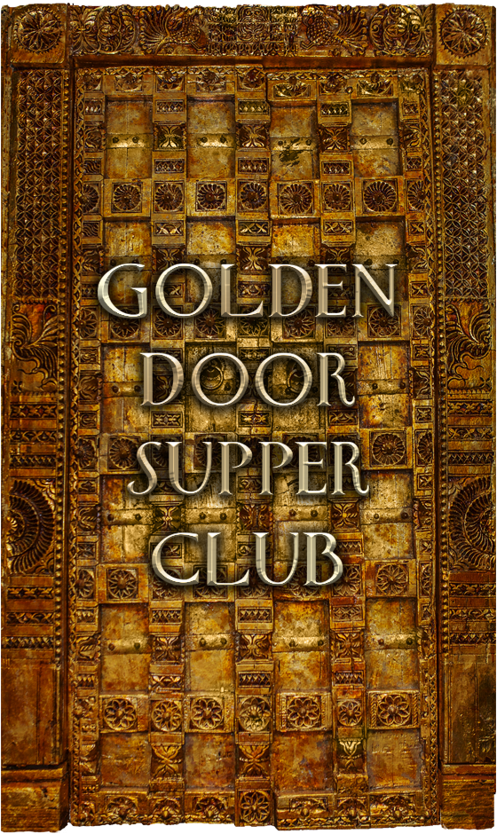
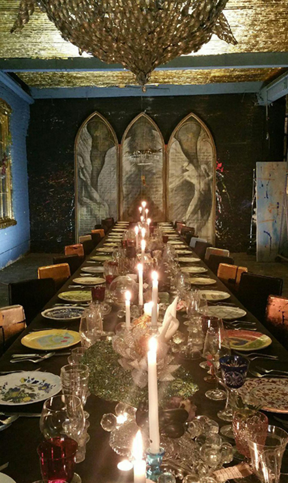

{% assign menu = site.data.supper-club.menu %}
<div class="supper-club-page">
  <div class="row">
    <div class="col-md-6">
      <div class="col-1 pull-right">

        

        

      </div>
    </div>
    <div class="col-md-6">
      <div class="col-2 pull-left">

        <div class="supper-club-menu paper">
          <h1><span class="embellishment left"></span>{{ menu.title }}<span class="embellishment right"> </span></h1>
          <h2 class="menu-desc">{{ menu.desc }}</h2>
          <ul>
            {% for x in menu.participants %}
            <li>{{ x }}</li>
            {% endfor %}
          </ul>
          {% for c in menu.courses %}
          <h2><span class="embellishment left"></span>{{ c.title }}<span class="embellishment right"> </span></h2>
          <ul>
            {% for i in c.items %}
            <li>{{ i }}</li>
            {% endfor %}
          </ul>
          {% endfor %}
          
        </div>

        <div class="the-forgotten-corner">
          <h1>The Forgotten Corner of Oregon</h1>
          <p>Baker, Grant, Harney and Malheur counties constitute 28.3% of the land in our state, 1.5% of our population, and is home to many of the highest poverty, unemployment and hunger rates in Oregon. There are 34 communities with schools and only 1 has 5 days of school a week.  85% of these communities do not have local access to a hospital, clinic, doctor, nurse, dentist, gym, ongoing arts and health education, including no access to fresh food.  The local gas station becomes the community grocery store, with many families traveling up to 250 miles on country roads once a month to purchase groceries.</p>
          <p>KIDS-HEAL is addressing and solving these problems by creating, producing and distributing  free interactive Arts&Health education to all the children in the Forgotten Corner of Oregon, in English and Spanish, in analog and digital and with a lot of fun.</p>
          <p class="special-message">Where there is physical hunger there is also creative hunger.</p>
          <p class="reservations"><a href="/supper-club/seatings.html">Click here for reservations.</a></p>
          <p class="custom-dinners">Custom dinners for 34 available upon request.</p>
        </div>
      </div>
    </div>
  </div>
</div>
